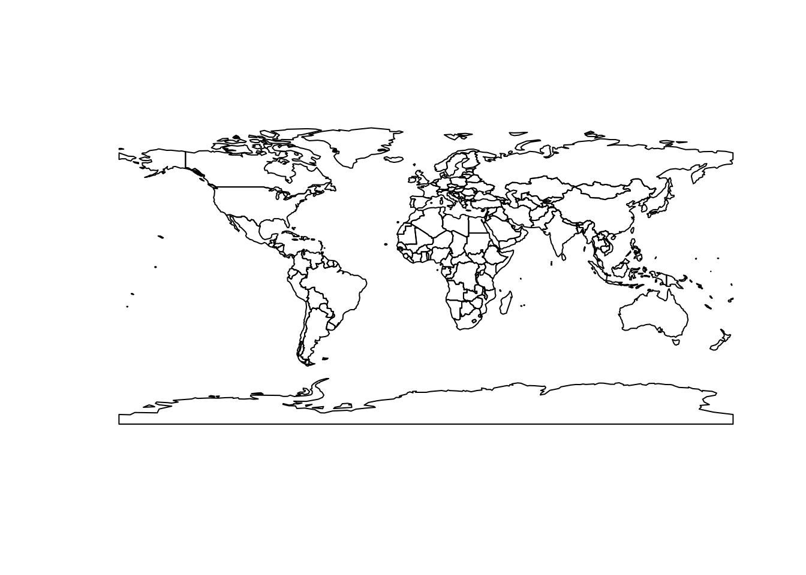
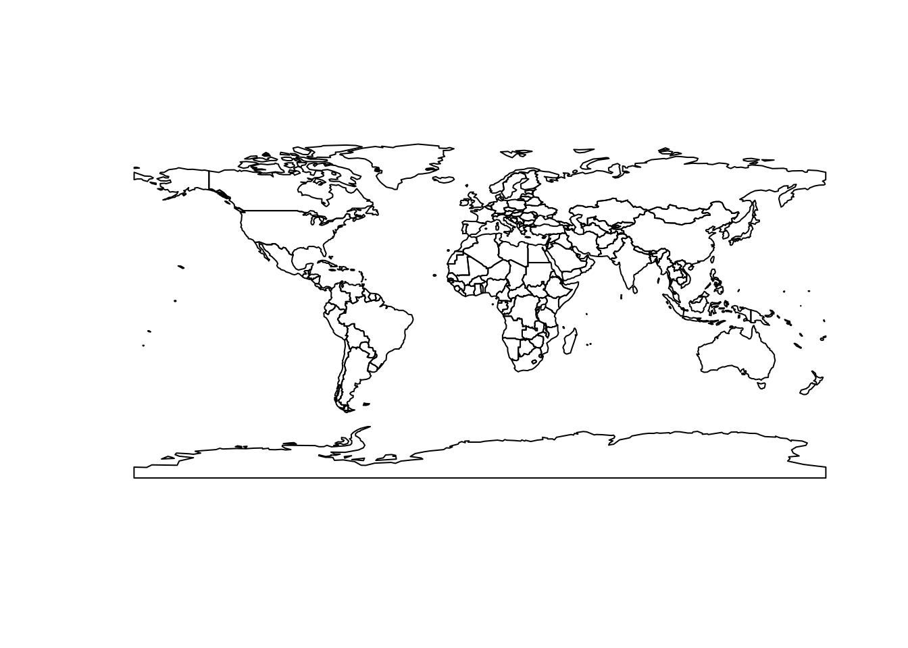

Code
library("sf")Linking to GEOS 3.10.2, GDAL 3.4.1, PROJ 8.2.1; sf_use_s2() is TRUECode
countries <- st_read("data/countries.gpkg", quiet = T)
plot(st_geometry(countries))
library("sf")Linking to GEOS 3.10.2, GDAL 3.4.1, PROJ 8.2.1; sf_use_s2() is TRUEcountries <- st_read("data/countries.gpkg", quiet = T)
plot(st_geometry(countries))
data <- read.csv("data/stat.csv")
head(data) id name region pop gdp gdppc year
1 AFG Afghanistan Asia 38928341 19807067268 508.81 2020
2 AGO Angola Africa 32866268 62306913444 1895.77 2020
3 ALB Albania Europe 2837743 14799615097 5215.28 2020
4 AND Andorra Europe 77146 3155065488 40897.33 2019
5 ARE United Arab Emirates Asia 9770526 421142267937 43103.34 2019
6 ARG Argentina America 45376763 383066977654 8441.92 2020Merge data & geometries
world = merge(countries, data, by.x = "ISO3", by.y = "id")Convert to geojson & export
library(geojsonsf)
geo = sf_geojson(world)
write(geo, "data/world.geojson")world = FileAttachment("data/world.geojson").json()Inputs.table(world.features.map((d) => d.properties))d3 = require("d3@7", "d3-geo-projection@4")
bertin = import('https://cdn.skypack.dev/bertin@0.9.12')viewof val = Inputs.radio(["pop", "gdp"], {
label: "Data to be displayed",
value: "pop"
})
viewof step = Inputs.range([10, 50], {
label: "step",
step: 1,
value: 15
})
viewof k = Inputs.range([5, 30], {
label: "Radius of the largest circle",
step: 1,
value: 15
})
viewof dorling = Inputs.toggle({ label: "Avoid overlap (dorling)" })bertin.draw({
params: { projection: d3.geoBertin1953() },
layers: [
{
type: "header",
text:
(val == "pop" ? "World population" : "World GDP") + ` (step = ${step})`,
fill: "#cf429d"
},
{
type: "regularbubble",
geojson: world,
step: step,
values: val,
k: k,
fill: "#cf429d",
tooltip: [
"$NAMEen",
"",
"country value",
`$${val}`,
"",
"dot value",
"$___value" // ___value is the name of the computed field with the value of the point
],
dorling: dorling
},
{ geojson: world, fill: "white", fillOpacity: 0.3, stroke: "none" },
{ type: "graticule" },
{ type: "outline" }
]
})